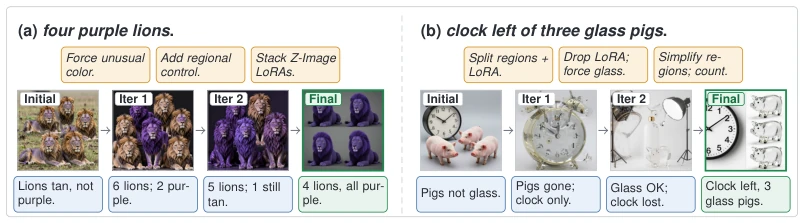

Figure 1: Overall framework of COMFYCLAW. The agent edits a ComfyUI workflow graph, the runtime renders a candidate image, the verifier returns requirement-level and region-level feedback, and the agent evolves skills that can be reused in future workflow-construction runs.

Figure 4: Iterative visual refinement under COMFYCLAW. (a) four purple lions (verifier 0.33→0.91); (b) a clock to the left of three glass pigs (verifier 0.31→0.96). Each strip reads left to right: the agent inspects the current image, the verifier emits a critique (blue), the agent turns it into a refinement instruction (orange) for the next pass, and re-executes the workflow; the selected best output is highlighted in green. Refinement repairs unusual-color attributes, conflicting workflow components, or spatial-relation failures that the single-pass baseline could not resolve.
Figure 3: Qualitative comparison across methods on six prompts spanning five capability categories. Each column is a prompt (header shows category and full description); rows are Base (single-pass baseline) and Ours (COMFYCLAW, green border). COMFYCLAW more reliably realises object counts, spatial relations, scene-text accuracy, and fine-grained attribute control.